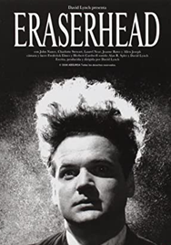
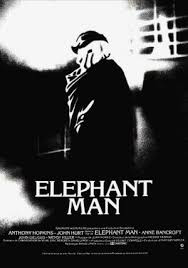
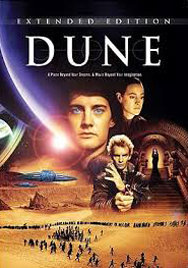
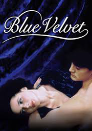
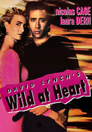
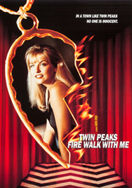
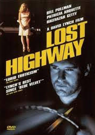
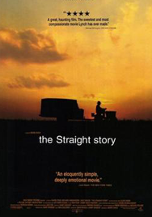
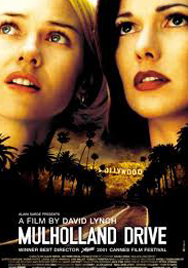
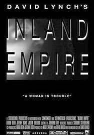

Heraserhead
Año: 1977
Sinopsis:
Henry Spencer, un joven deprimido y asustadizo, sufre desde pequeño unas extrañas pesadillas de
las que intenta liberarse a través de su imaginación. Cuando Henry es invitado a cenar a casa de
su amiga Mary, se entera de que ha sido padre de un bebe.

Elephant Man
Año: 1980
Sinopsis:
Un médico rescata a un hombre deformado del circo en esta adaptación sobre la vida de John
Merrick de David Lynch. El guion fue adaptado por Lynch, Christopher De Vore, y Eric Bergren de
los libros El Hombre Elefante y otras reminiscencias (1923) de Sir Frederick Treves.

Dune
Año: 1984
Sinopsis:
Por orden imperial, la familia Atreides deberá hacerse cargo de la explotación del desértico
planeta Arrakis, que es el único planeta donde se encuentra la especia, una potente droga que,
además, es necesaria para los vuelos espaciales.

Blue Velvet
Año: 1986
Sinopsis:
Jeffrey Braumont encuentra una oreja semidevorada por las hormigas y decide llevársela al
detective Williams. Es una película que mezcla elementos de terror psicológico con el cine
negro.

Wild At Heart
Año: 1990
Sinopsis:
Durante un permiso carcelario, Sailor va a ver a su novia Lula y ambos deciden huir a Nueva
Orleans. La madre de la chica, que se opone a esta relación, se pone en contacto con un mafioso
para que elimine a Sailor.

Twin Peaks
Año: 1992
Sinopsis:
La historia comienza cuando el cuerpo de Teresa Banks es hallado en el río y el caso es asignado
a dos agentes del FBI. El agente llega a concluir que el asesino volverá a matar. Un año después
se narran los últimos días en la vida de Laura, asediada por sus pesadillas.

Lost Highway
Año: 1997
Sinopsis:
Grabaciones en video anónimas presagian la condena por asesinato de un músico; la novia de un
gánster lleva a un mecánico por el camino del mal. El filme es un thriller psicológico que
cuenta con elementos de cine negro, de cine policíaco y surrealista.

The Straight Story
Año: 1999
Sinopsis:
Un anciano compra un tractor John Deere y conduce desde Iowa hasta Wisconsin para ver a su
hermano enfermo y distanciado. La película está basada en la historia real del viaje de 1994 de
Alvin Straight a través de Iowa y Wisconsin en una cortadora de césped.

Mulholland Drive
Año: 2001
Sinopsis:
Betty Elms, una joven aspirante a actriz, llega a Los Ángeles para convertirse en estrella de
cine y se aloja en el apartamento de su tía. Allí conoce a la enigmática Rita, una mujer que
padece amnesia a causa de un accidente sufrido.

Inland Empire
Año: 2007
Sinopsis:
La actriz Nikki participa en un nuevo filme. Debido a que su esposo es muy celoso, su co-estelar
Devon recibe la advertencia de no hacer ninguna escena romántica, especialmente porque los
personajes que interpretan viven un romance.